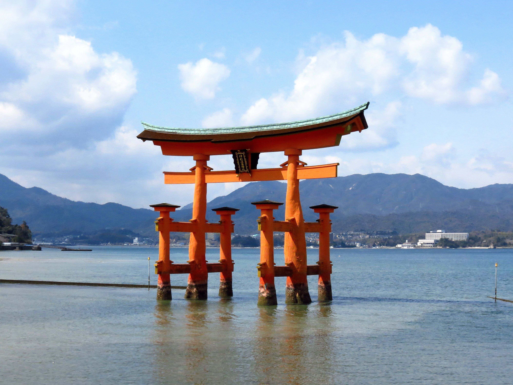
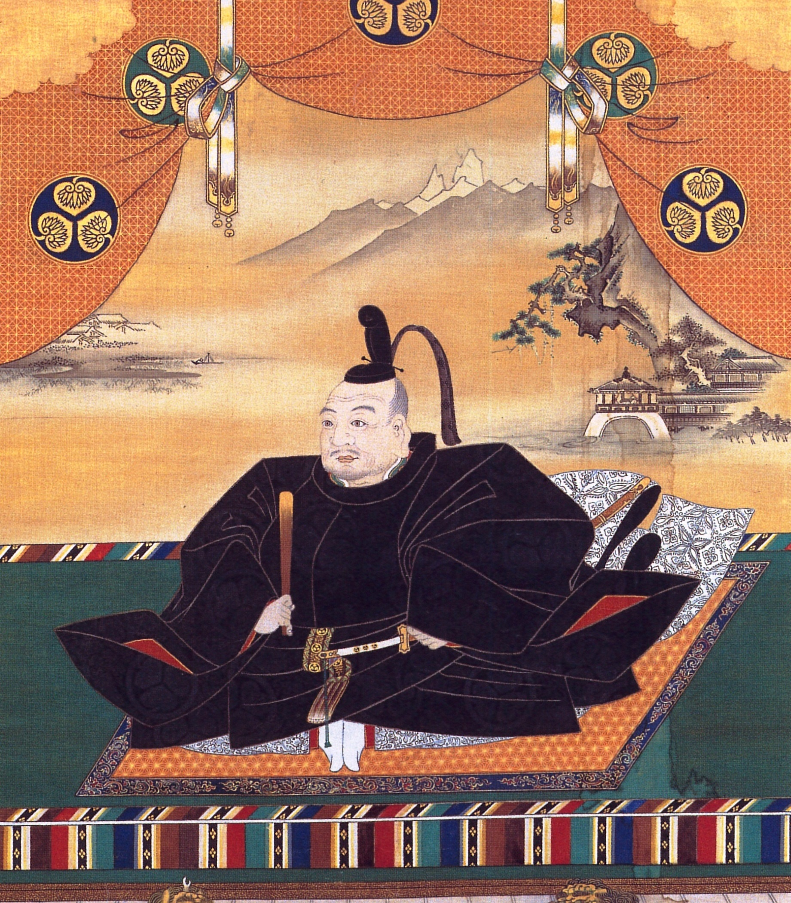
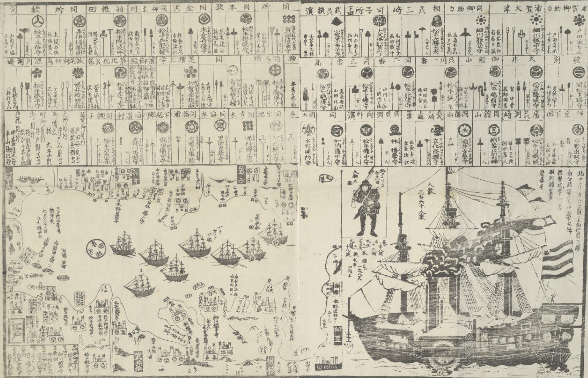

1. Το Απομονωμένο Αρχιπέλαγος & η Ιαπωνική Κοσμοθεώρηση
Στο 15ο μάθημα της σειράς, η καθηγήτρια Μαρία Ευθυμίου στρέφει την ιστορική ματιά από την αυτοκρατορική Κίνα στη γειτονική Ιαπωνία (Nihon / Nippon = «Η Χώρα του Ανατέλλοντος Ηλίου»).
Όπως επισημαίνει με το χαρακτηριστικό της χιούμορ η καθηγήτρια, για τους υπερόπτες αυτοκράτορες του Πεκίνου η Ιαπωνία εθεωρείτο επί αιώνες «η μαύρη δευτεράντζα» — ένα ιδιόρρυθμο, εσωστρεφές νησιωτικό σύμπλεγμα που ζούσε αποκομμένο στον δικό του μικρόκοσμο. Ενώ ένας δυτικός παρατηρητής νομίζει συχνά πως Κινέζοι και Ιάπωνες μοιάζουν, εκείνοι ξεχωρίζουν ακαριαία ο ένας τον άλλον από μακριά και ιστορικά έτρεφαν βαθύτατη αμοιβαία αντιπάθεια! Ακόμη και το ίδιο το όνομα Nihon / Japon είναι κινεζικής προέλευσης: σήμαινε τη «χώρα του ανατέλλοντος ηλίου», καθώς τα νησιά κείτονταν ανατολικά των κινεζικών ακτών, εκεί απ' όπου ανέτειλε ο ήλιος.
Η Κίνα υπήρξε ανέκαθεν η πολιτισμική μήτρα που πρόσφερε στην Ιαπωνία τα βασικά θεμέλια του πολιτισμού της: τα ιδεογράμματα (Kanji), τον Κομφουκιανισμό, τον Βουδισμό και τη φιλοσοφία Ζεν. Όμως οι Ιάπωνες διέθεταν μια εντελώς ξεχωριστή ιδιοσυγκρασία: αφομοίωναν τα ξένα δάνεια και τα μεταμόρφωναν τόσο ριζικά μες στην απομόνωσή τους, ώστε στο τέλος «όλα να είναι κινεζικά και τίποτα να μην είναι κινεζικό, γιατί όλα γίνονται απολύτως γιαπωνέζικα!».
Η Ιαπωνία είναι μια χώρα βαθιά σημαδεμένη από τη γεωγραφική της μοίρα:
- Ένα Απομονωμένο Αρχιπέλαγος: Αποτελείται από τέσσερα μεγάλα νησιά (Χονσού, Χοκκάιντο, Κιούσου, Σικόκου) και ένα «κομπολόι» από χιλιάδες μικρότερα νησάκια —από τα νησιά Ριούκιου στον νότο μέχρι τις Κουρίλες νήσους στον βορρά. Αυτή η φυσική θαλάσσια τάφρος προστάτευσε την Ιαπωνία από ξένες επιδρομές επί χιλιετίες. Ακόμη και οι ανίκητες μογγολικές αρμάδες του Κουμπλάι Χαν συνετρίβησαν δύο φορές, το 1274 και το 1281, από τους σωτήριους τυφώνες που οι ευγνώμονες Ιάπωνες ονόμασαν Καμικάζι (Kamikaze = «Θείος Άνεμος»).
- Γη της Ηφαιστειακής Αστάθειας: Βρίσκεται πάνω στο «Δαχτυλίδι της Φωτιάς» του Ειρηνικού, εκτεθειμένη αδιάκοπα σε σεισμούς, σαρωτικά τσουνάμι, εκρήξεις ηφαιστείων και καταστροφικούς τυφώνες. Αυτή η διαρκής συμβίωση με την καταστροφή σμίλευσε έναν βαθιά στωικό ψυχισμό: επίγνωση της παροδικότητας των πάντων (Mono no aware = η συγκίνηση για τη φευγαλέα φύση των πραγμάτων), λιτότητα, ατσάλινη κοινωνική συνοχή και απόλυτο αυτοέλεγχο.
- Ναυτικός Λαός & Πειρατεία: Ήδη από τον μεσαίωνα, Ιάπωνες ναυτικοί και σκληροτράχηλοι πειρατές (Wokou) λυμαίνονταν τις ακτές της Κορέας και της Κίνας. Η Κορέα —μια χώρα που «σχεδόν φιλιέται» γεωγραφικά με τα νότια ιαπωνικά νησιά— υπήρξε το σταθερό γεωπολιτικό προαύλιο που οι Κινέζοι θεωρούσαν δικό τους προτεκτοράτο και οι Ιάπωνες εποφθαλμιούσαν διαχρονικά.

2. Σιντοϊσμός & Βουδισμός Ζεν: Η Διπλή Πνευματική Ταυτότητα
Στην Ιαπωνία δεν επικράτησε ποτέ ένας δογματικός, αποκλειστικός μονοθεϊσμός. Αντίθετα, δύο εντελώς διαφορετικές παραδόσεις συνυπήρξαν αρμονικά, διαμορφώνοντας τη διπλή ψυχή του ιαπωνικού λαού:
Ο Σιντοϊσμός (Shinto = «Ο Δρόμος των Θεών»):
Η γηγενής, πανάρχαια ανιμιστική λατρεία της φύσης.
- Τα Κάμι (Kami): Δεν υπάρχουν ιερά βιβλία, θεολογικά δόγματα ή άκαμπτες εντολές. Ολόκληρος ο φυσικός κόσμος πάλλεται από θεϊκά πνεύματα (Kami) που κατοικούν στα ιερά βουνά (όπως το όρος Φούτζι), στα ποτάμια, στους καταρράκτες, στους κεραυνούς και στα αιωνόβια δέντρα. Όπως παρατηρεί με έμφαση η Μαρία Ευθυμίου: «Οι Ιάπωνες είναι επίσημα παγανιστές! Η επίσημη θρησκεία τους είναι η λατρεία της φύσης!».
- Η Θεϊκή Καταγωγή της Αυτοκρατορικής Δυναστείας: Σύμφωνα με τον ιδρυτικό μύθο, ο πρώτος αυτοκράτορας Τζίμμου (660 π.Χ.) καταγόταν απευθείας από τη θεά του Ήλιου Αματεράσου (Amaterasu). Εξ ου και η ιαπωνική αυτοκρατορική δυναστεία είναι η παλαιότερη αδιάκοπη δυναστεία στον κόσμο! Ο Αυτοκράτορας θεωρείται «γιος του Ήλιου» και η ίδια η Ιαπωνία «κόρη του Ήλιου» — είναι κυριολεκτικά μια θεϊκή οικογένεια.
- Η Έννοια της Καθαρότητας (Kegare): Ο Σιντοϊσμός απεχθάνεται το μίασμα, τη σήψη, το αίμα και τον θάνατο. Η λατρεία επικεντρώνεται σε τελετουργικούς καθαρμούς με νερό κάτω από τις χαρακτηριστικές ξύλινες πύλες Τορίι (Torii), που οριοθετούν το πέρασμα από τον βέβηλο καθημερινό κόσμο στον ιερό χώρο των πνευμάτων.
Ο Βουδισμός Ζεν:
Εισήχθη από την Κίνα και την Κορέα τον 6ο αιώνα μ.Χ. Ενώ ο Σιντοϊσμός λάτρευε τη χαρά της ζωής, τη γονιμότητα και τη φύση, ο Βουδισμός έδωσε βαθιές υπαρξιακές απαντήσεις για τον πόνο, τη ματαιότητα και τον θάνατο.
- Ειδικά η σχολή του Ζεν (Zen), με την προσήλωση στον σιωπηλό διαλογισμό (Zazen), την αυστηρή αυτοκυριαρχία και την απόλυτη διαύγεια του νου μπροστά στον αναπόφευκτο θάνατο, μετατράπηκε στην πνευματική ραχοκοκαλιά της πολεμικής κάστας των Σαμουράι.
- Γέννησε τις πιο εκλεπτυσμένες μορφές τέχνης: την Τελετή του Τσαγιού (Cha-no-yu), τους αφαιρετικούς Βραχόκηπους Ζεν (Karesansui), την τέχνη των Μπονσάι, την ανθοδετική Ικεμπάνα και την ακριβή ποίηση των Χαϊκού.
3. Η Φεουδαρχική Ιαπωνία: Αυτοκράτορας, Σογκούν & Σαμουράι
Από τα τέλη του 12ου αιώνα, η Ιαπωνία ανέπτυξε ένα εξαιρετικά σύνθετο φεουδαρχικό καθεστώς, με εντυπωσιακές αναλογίες με τη μεσαιωνική ιπποτική Ευρώπη:
Η Διπλή Εξουσία:
- Ο Αυτοκράτορας (Tenno = «Ουράνιος Κυρίαρχος»): Κατοικούσε στο ιερό Κιότο. Θεωρούνταν ζωντανός θεός και σύμβολο εθνικής ενότητας, αλλά δεν ασκούσε καμία ουσιαστική πολιτική ή στρατιωτική εξουσία· ήταν μια σεβάσμια θρησκευτική και τελετουργική μορφή.
- Ο Σογκούν (Shogun = «Μεγάλος Στρατηγός που Καθυποτάσσει τους Βαρβάρους»): Ο de facto στρατιωτικός δικτάτορας της χώρας, που κυβερνούσε μέσω της στρατιωτικής διοίκησης (Μπακούφου / Bakufu = «κυβέρνηση της σκηνής»).
- Οι Νταϊμιό (Daimyo = «Μεγάλο Όνομα»): Περίπου τριακόσιες ισχυρές οικογένειες φεουδαρχών αρχόντων, κυρίαρχοι αχανών επαρχιών, μεγαλοπρεπών κάστρων και χιλιάδων δουλοπάροικων αγροτών.
Οι Σαμουράι & ο Κώδικας Μπουσίντο (Bushido):
Στην υπηρεσία των Νταϊμιό βρισκόταν η κληρονομική στρατιωτική αριστοκρατία των Σαμουράι (Samurai = «εκείνοι που υπηρετούν»):
- Έφεραν το διακριτικό ζεύγος σπαθιών (Daisho): το μακρύ κυρτό σπαθί Κατάνα (Katana) —το πιο κοφτερό σπαθί στην παγκόσμια ιστορία, που θεωρούνταν κυριολεκτικά η «ψυχή του σαμουράι»— και το κοντό εγχειρίδιο Wakizashi.
- Ο Κώδικας Μπουσίντο (Bushido = «Ο Δρόμος του Πολεμιστή»): Ένας απαράβατος κώδικας τιμής, αρχικά προφορικός και μετέπειτα γραπτός, που απαιτούσε απόλυτη πειθαρχία, λιτότητα, ανδρεία, περιφρόνηση του θανάτου και τυφλή αφοσίωση στον άρχοντα. Όπως επισημαίνει η Μαρία Ευθυμίου, οι σαμουράι εξέφραζαν τις βαθύτερες αξίες ολόκληρου του ιαπωνικού λαού. Το Μπουσίντο επέβαλε τον απόλυτο έλεγχο των συναισθημάτων: η υπερβολική εκδήλωση χαράς ή λύπης εθεωρείτο αναξιοπρέπεια («βλέπεις ιαπωνικό έργο και δεν καταλαβαίνεις αν ο πρωταγωνιστής είναι ερωτευμένος, θυμωμένος ή έτοιμος να σφάξει!»).
- Σεππούκου (Seppuku / Χαρακίρι) & η Ψυχολογία της Τιμής: Η έννοια της τιμής στην Ιαπωνία λειτουργεί με τρόπο εκ διαμέτρου αντίθετο από τη Δύση. Αν κάποιος σε συκοφαντήσει στη Δύση, στρέφεσαι εναντίον του με ύβρεις ή αγωγές· στην Ιαπωνία, αν ατιμαστείς, αυτοκτονείς τελετουργικά (χαρακίρι) για να αποδείξεις την ακεραιότητά σου και να αποκαταστήσεις την τιμή της οικογένειάς σου.
- Το «Κατάστημα της Αυτοκτονίας» & το Σπαθί του Φίλου: Όπως περιγράφει γλαφυρά η καθηγήτρια (διακόπτοντας με γέλια για ένα σοκολατάκι που της άφησε συγκινημένος ακροατής στην έδρα: «Να το βράσω το μπουσίντο, στην Ιαπωνία αυτό δεν θα γινότανε, στην Ελλάδα κάνουμε αυτά τα γλυκά πράγματα!»), η πράξη ήταν αυστηρότατα τελετουργική: «Πας στο ειδικό κατάστημα αυτοκτονίας, παίρνεις το σωστό μαχαιράκι, το απορροφητικό χαλάκι για τα υγρά, το κυπελλάκι... Και δίπλα σου στέκεται ο καλύτερός σου φίλος με το πιο κοφτερό κατάνα. Χώνεις το μαχαίρι στα σπλάχνα και τα σκίζεις χωρίς να βγάλεις κιχ! Αν ο φίλος δει ότι ο αβάσταχτος πόνος πάει να σε εξευτελίσει με μια κραυγή, σου παίρνει ακαριαία το κεφάλι!».
- Η Τύχη του Συκοφάντη: Όταν αργότερα αποκαλυπτόταν ότι ο νεκρός ήταν αθώος, ολόκληρη η κοινωνία γύριζε σιωπηλά το βλέμμα στον συκοφάντη περιμένοντας πότε θα πάει κι εκείνος στο μαγαζί της αυτοκτονίας —«γιατί πλέον δεν τον έπλενε ούτε ο Νιαγάρας!». Αυτός ο μηχανισμός δημιούργησε μια κοινωνία απίστευτης προσοχής στον λόγο, όπου κανείς δεν εκτοξεύει επιπόλαιες κατηγορίες.
4. Η Εποχή του Sakoku, οι «Ιαπωνικές Βερσαλλίες» & η Αισθητική Άνθηση
Επί αιώνες, η Ιαπωνία σπαρασσόταν από κύκλους άγριων εμφυλίων πολέμων ανάμεσα στους Νταϊμιό (τον 12ο, 14ο και κυρίως τον 16ο αιώνα —τη λεγόμενη Εποχή των Εμπολέμων Κρατών / Sengoku Jidai). Μετά από κάθε γύρο πολέμου, οι ισχυρότεροι άρχοντες υπέτασσαν τους ασθενέστερους. Ο τελικός νικητής αναδείχθηκε το 1600 στην κολοσσιαία μάχη της Σεκιγκαχάρα: ο Τοκουγκάουα Ιεγιάσου (Tokugawa Ieyasu).
Το 1603, ο Ιεγιάσου ίδρυσε το Σογκουνάτο των Τοκουγκάουα, μεταφέροντας το κέντρο της εξουσίας στο Έντο (το σημερινό Τόκιο). Η δυναστεία του θα κυβερνούσε την Ιαπωνία για δυόμισι αιώνες (1603–1867), εγκαινιάζοντας την περίοδο της απόλυτης εσωτερικής ειρήνης (Pax Tokugawa).

Η Πολιτική του Sakoku («Κλειστή Χώρα», 1639–1853):
Όταν οι Πορτογάλοι έφτασαν το 1543 και οι Ιησουΐτες ιεραπόστολοι (όπως ο Άγιος Φραγκίσκος Ξαβιέ) άρχισαν να προσηλυτίζουν εκατοντάδες χιλιάδες Ιάπωνες, οι Τοκουγκάουα θορυβήθηκαν βαθύτατα. Διέγνωσαν ότι ο Χριστιανισμός ήταν ο προπομπός της ευρωπαϊκής αποικιοκρατίας και ότι η υποταγή στον Πάπα υπέσκαπτε την απόλυτη πίστη στον Σογκούν.
- Διωγμός του Χριστιανισμού: Ο Χριστιανισμός τέθηκε εκτός νόμου. Χιλιάδες πιστοί σταυρώθηκαν, αποκεφαλίστηκαν ή βασανίστηκαν, ενώ οι ύποπτοι υποχρεώνονταν να πατήσουν μπρούντζινες εικόνες του Χριστού (Fumi-e) για να αποδείξουν ότι δεν ήταν χριστιανοί.
- Σφράγισμα των Συνόρων (1639): Επιβλήθηκε το διάταγμα Sakoku (Κλειστή Χώρα). Απαγορεύτηκε σε όλους τους Ιάπωνες να ταξιδέψουν στο εξωτερικό επί ποινή θανάτου, ενώ όσοι βρίσκονταν ήδη έξω δεν επιτρεπόταν να επιστρέψουν ποτέ! Όλα τα μεγάλα υπερωκεάνια ιστιοφόρα καταστράφηκαν.
- Το Τεχνητό Νησί Ντετζίμα: Όλοι οι Ευρωπαίοι εκδιώχθηκαν. Μοναδική εξαίρεση αποτέλεσαν ελάχιστοι Ολλανδοί έμποροι —τους οποίους οι Ιάπωνες προτιμούσαν επειδή ήταν συγκρατημένοι, πειθαρχημένοι και ενδιαφέρονταν αποκλειστικά για το εμπόριο και όχι για ιεραποστολές. Οι Ολλανδοί περιορίστηκαν αυστηρά στο τεχνητό νησάκι Ντετζίμα (Dejima) στο λιμάνι του Ναγκασάκι. Μέσω αυτού του μοναδικού μικροσκοπικού «παραθύρου», μια χούφτα Ιάπωνες λόγιοι μελετούσαν τη δυτική ιατρική, γεωγραφία και οπλοποιία (οι λεγόμενες «Ολλανδικές Σπουδές» / Rangaku).
Το Σύστημα Sankin-kōtai & οι «Ιαπωνικές Βερσαλλίες»:
Για να διατηρήσουν τη σιδηρά πυγμή τους πάνω στους ~300 φεουδάρχες Νταϊμιό, οι Τοκουγκάουα επινόησαν έναν ιδιοφυή μηχανισμό πολιτικού ελέγχου: το σύστημα Σάνκιν Κοτάι (Sankin-kōtai = «εναλλάξ παρουσία»).
- Κάθε Νταϊμιό ήταν υποχρεωμένος να ζει εναλλάξ έναν χρόνο στην επαρχία του και έναν χρόνο στο Έντο, στην άμεση εποπτεία του Σογκούν.
- Όταν ο άρχοντας επέστρεφε στο κτήμα του, η σύζυγος και τα παιδιά του παρέμεναν υποχρεωτικά στο Έντο ως επίσημοι όμηροι του καθεστώτος!
- Η Οικονομική Εξάντληση των Φεουδαρχών: Όπως τονίζει με οξύνοια η Μαρία Ευθυμίου, οι Τοκουγκάουα έκαναν ακριβώς ό,τι έκανε ο σύγχρονός τους Λουδοβίκος ΙΔ΄ στη Γαλλία! Ο «Βασιλιάς Ήλιος» έχτισε τις Βερσαλλίες για να μαντρώσει τη γαλλική αριστοκρατία με θέατρα, δεξιώσεις και κολακείες, αφαιρώντας της κάθε δυνατότητα τοπικής ανταρσίας. Οι Τοκουγκάουα έκαναν το ίδιο στο Έντο: επέβαλαν εξαιρετικά υψηλά πρότυπα πολυτέλειας για τα αρχοντικά των Νταϊμιό στην πρωτεύουσα. Κάθε άρχοντας, από επίδειξη ισχύος και κοινωνικού γοήτρου, ξόδευε αστρονομικά ποσά για πολυτελείς επαύλεις, στρατιές υπηρετών, περίτεχνους κήπους και πανάκριβες πομπές μετακίνησης. Το αποτέλεσμα; Οι θησαυροί των Νταϊμιό εξαντλούνταν ολοκληρωτικά στην επίδειξη πλούτου στο Έντο, με συνέπεια να μην τους μένει ούτε ένα φράγκο περίσσευμα για να συντηρήσουν ιδιωτικό στρατό ή να χρηματοδοτήσουν ανταρσία! «Τυχαίο; Δεν νομίζω! Το σκέφτηκαν μια χαρά οι άνθρωποι!».
Η Αισθητική Επανάσταση της Pax Tokugawa & ο Ευρωπαϊκός Ιαπωνισμός:
Χάρη στους δυόμισι αιώνες αδιατάρακτης εσωτερικής ειρήνης, το Έντο μετατράπηκε στη μεγαλύτερη μητρόπολη του πλανήτη (ξεπερνώντας το ένα εκατομμύριο κατοίκους, μεγαλύτερο από το Λονδίνο και το Παρίσι). Μέσα σε αυτή την ειρήνη, ο ιαπωνικός πολιτισμός ωρίμασε και εκλέπτυνε κάθε έκφανση της καθημερινότητας. Όταν η Δύση τον ανακάλυψε στα μέσα του 19ου αιώνα, κυριολεκτικά τον ερωτεύτηκε (Ιαπωνισμός / Japonisme):
- Μπονσάι & Ικεμπάνα: Η ανθοδετική (Ικεμπάνα) δεν είναι μια απλή διακόσμηση, αλλά ιερή γεωμετρία και διαλογισμός της αρμονίας. Τα Μπονσάι (νάνοι-δέντρα) αντιπροσωπεύουν μια απίστευτη βοτανική μαεστρία και υπομονή δεκαετιών, συμπυκνώνοντας το μεγαλείο ενός αιωνόβιου δέντρου σε μια μινιατούρα.
- Ιαπωνικοί Κήποι: Λόγω της σιντοϊστικής λατρείας της φύσης, οι Ιάπωνες ανέπτυξαν κήπους απαράμιλλης ισορροπίας, όπου νερό, βράχοι, βρύα και λουλούδια συνθέτουν ζωντανούς πίνακες ζωγραφικής.
- Θέατρο (Καμπούκι vs Νο): Το αρχαίο, αυστηρό και μυστηριακό θέατρο Νο (Noh) με τις ξύλινες μάσκες και τους αργούς τελετουργικούς ρυθμούς, πλάι στο εκρηκτικό, θεαματικό και λαϊκό θέατρο Καμπούκι (Kabuki) με τα έντονα μακιγιάζ και τις δραματικές ανατροπές.
- Συρόμενα Πετάσματα (Shoji) & Μοντέρνα Αρχιτεκτονική: Τα παραδοσιακά ιαπωνικά σπίτια βασίζονταν σε λιτές γραμμές, τετραγωνισμένα ξύλινα πλαίσια και συρόμενα πετάσματα από ριζόχαρτο (Σότζι / Shoji). Ο χώρος ήταν ενιαίος και πολυμορφικός: σέρνοντας ένα πέτασμα, το δωμάτιο γινόταν τραπεζαρία· σέρνοντας ένα άλλο, μετατρεπόταν σε κοιτώνα με στρώματα που μαζεύονταν εύκολα. Ελάχιστα έπιπλα, απόλυτο Ζεν, και τεράστια ανοίγματα προς τον κήπο. Όπως σημειώνει η Μαρία Ευθυμίου, αυτή η ιαπωνική αντίληψη αποτέλεσε τη βάση της σύγχρονης δυτικής αρχιτεκτονικής: γοήτευσε τον Λε Κορμπυζιέ, τον Άλβαρ Άαλτο, και ενέπνευσε ακόμη και τις συρόμενες πόρτες στις αθηναϊκές πολυκατοικίες της δεκαετίας του 1960!
- Γκέισες & ο «Επιπλέων Κόσμος» (Ukiyo): Οι καλλιτέχνιδες συνοδοί υψηλής μόρφωσης, μουσικής, ποίησης και χορού σαγήνευσαν τους Δυτικούς, εμπνέοντας όπερες όπως η Μαντάμα Μπατερφλάι του Πουτσίνι.
- Η Ποίηση των Χαϊκού: Μια ποίηση απόλυτης πειθαρχίας: ακριβώς δεκαεπτά συλλαβές σε τρεις στίχους (5–7–5), όπου ο ποιητής οφείλει να συλλάβει μια ολόκληρη κοσμική αλήθεια μέσα σε μια φευγαλέα στιγμή της φύσης.
- Η Πρωτοπορία της Γυναικείας Λογοτεχνίας: Σε μια παγκόσμια πρωτοτυπία, οι γυναίκες της ιαπωνικής αριστοκρατίας υπήρξαν οι θεμελιώτριες της πεζογραφίας! Επειδή οι άνδρες έγραφαν υποχρεωτικά στη λόγια κινεζική γλώσσα (που λειτουργούσε όπως τα λατινικά στη μεσαιωνική Ευρώπη), οι αρχόντισσες του Έντο και του Κιότο, έχοντας άφθονο ελεύθερο χρόνο, έγραψαν μυθιστορήματα και ημερολόγια στη ζωντανή, λαϊκή ιαπωνική γλώσσα (με τη συλλαβική γραφή Hiragana), παράγοντας έργα τολμηρά, ψυχολογικά και διαχρονικά (με κορωνίδα το ιστορικό Έπος του Γκέντζι).
5. Τα Μαύρα Πλοία (1853), η Επανάσταση Μεϊτζί & ο «Τελευταίος Σαμουράι»
Στα μέσα του 19ου αιώνα, η Ιαπωνία ζούσε μακάρια στον μεσαιωνικό της παράδεισο. Όμως ο κόσμος γύρω της είχε μεταβληθεί ανεπιστρεπτί: η Βιομηχανική Επανάσταση είχε καταστήσει τη Δύση παντοδύναμη, και η γειτονική Κίνα είχε ήδη συντριβεί στους Πολέμους του Οπίου.
Η ψευδαίσθηση της απομόνωσης κατέρρευσε εκκωφαντικά στις 8 Ιουλίου 1853:
- Τέσσερα αμερικανικά ατμοκίνητα πολεμικά πλοία υπό τον αρχιπλοίαρχο Μάθιου Πέρι (Matthew Perry) κατέπλευσαν απειλητικά στον κόλπο του Έντο. Βαμμένα μαύρα και εκλύοντας στήλες καπνού, ονομάστηκαν από τους πανικόβλητους κατοίκους «Μαύρα Πλοία» (Kurofune).
- Οι Αμερικανοί, που εφάρμοζαν το Δόγμα Μονρόε στην ήπειρό τους αλλά αναζητούσαν εμπορικούς σταθμούς στον Ειρηνικό, έστησαν στο Έντο τηλέγραφους και μικροσκοπικούς σιδηροδρόμους αφήνοντας τους Ιάπωνες άναυδους. Ο Πέρι απαίτησε το άνοιγμα των λιμανιών, απειλώντας με κανονιοβολισμό.
- Το 1858, το τρομοκρατημένο Σογκουνάτο υπέγραψε τις πρώτες «Ετεροβαρείς Συνθήκες», παραχωρώντας εμπορικά προνόμια και ετεροδικία στις ΗΠΑ, τη Βρετανία, τη Γαλλία και τη Ρωσία.

Ο Εθνικός Διχασμός: Παραδοσιακοί εναντίον Εκσυγχρονιστών:
Η είδηση των ταπεινωτικών συνθηκών έπεσε σαν βόμβα στην ιαπωνική κοινωνία, έναν λαό που λάτρευε την πατρίδα του σαν θεά:
- Οι Παραδοσιακοί: Διακήρυτταν «Jōi» («Εκδιώξτε τους Βαρβάρους!»). Υποστήριζαν ότι τα ήθη, τα κατάνα και οι ιερές παραδόσεις αρκούσαν για να κρατήσουν την Ιαπωνία αλώβητη.
- Οι Εκσυγχρονιστές: Με απόλυτο, κυνικό ρεαλισμό, είδαν το μέλλον: «Κοιτάξτε δίπλα μας την Κίνα και την Ινδία! Αν μείνουμε με τα σπαθιά, σε λίγα χρόνια θα μας έχουν καταπιεί αμάσητους! Δεν θα είμαστε κομπλεξικοί. Θα πάρουμε από τους βαρβάρους ό,τι τους κάνει δυνατούς —την επιστήμη, τα όπλα, τη βιομηχανία τους— και θα τα κάνουμε δύο φορές καλύτερα! Δεν θα γίνουμε τα θύματα, θα γίνουμε οι θύτες!».
Το 1868, οι εκσυγχρονιστές σαμουράι των νότιων περιοχών (Σατσούμα και Τσόσου) ανέτρεψαν το Σογκουνάτο των Τοκουγκάουα. Επανέφεραν στο προσκήνιο τον δεκαπεντάχρονο αυτοκράτορα Μεϊτζί (Meiji = «Φωτισμένη Διακυβέρνηση»), μεταφέροντας την πρωτεύουσα στο Έντο, το οποίο μετονομάστηκε σε Τόκιο («Ανατολική Πρωτεύουσα»).
Το Δράμα των Σαμουράι & η Εξέγερση του Σατσούμα (1877):
Ο εκσυγχρονισμός απαιτούσε τη δημιουργία εθνικού στρατού κληρωτών δυτικού τύπου (Chōheirei). Αυτό σήμαινε νομοτελειακά την κατάργηση της κάστας των Σαμουράι: απαγορεύτηκε η οπλοφορία των σπαθιών και καταργήθηκαν οι κληρονομικές τους απολαβές.
- Όπως τονίζει η Μαρία Ευθυμίου, ήταν το πιο σπαρακτικό δράμα της σύγχρονης ιαπωνικής ιστορίας: η Ιαπωνία χρειάστηκε να εξοντώσει τους σαμουράι της —τους ανθρώπους που λάτρευε ως την ίδια την ψυχή της!.
- Το 1877 ξέσπασε η Εξέγερση του Σατσούμα, με επικεφαλής τον θρυλικό πολέμαρχο Σάιγκο Τακαμόρι (Saigo Takamori) —τον πραγματικό «Τελευταίο Σαμουράι» (όπως αποτυπώθηκε στην ομώνυμη χολιγουντιανή ταινία, το ιστορικό σενάριο της οποίας συνέγραψαν καθηγητές του Πανεπιστημίου του Κιότο).
- Στην τελική μάχη της Σιρογιάμα, οι τελευταίοι σαμουράι, οπλισμένοι μόνο με τα σπαθιά τους, όρμησαν ενάντια στον τακτικό αυτοκρατορικό στρατό που διέθετε σύγχρονα μυδράλια Gatling και πυροβόλα. Ο Τακαμόρι πολέμησε όλη μέρα βαριά τραυματισμένος στα σπλάχνα, μέχρι που εκτέλεσε τελετουργικό σεππούκου.
- Όταν ο νικητής στρατηγός πήγε στο παλάτι περιχαρής να ανακοινώσει ότι όλοι οι επαναστάτες σκοτώθηκαν, ο Αυτοκράτορας Μεϊτζί τον κεραυνοβόλησε με τη φράση: «Προσέξτε την έκφραση με την οποία μου ανακοινώνετε αυτό το νέο: Η ψυχή της Ιαπωνίας πέθανε σε αυτό το πεδίο της μάχης!».
Η Σταυροφορία της Αλφαβήτας & το Θαύμα των Τριών Δεκαετιών:
Υπό τα συνθήματα Fukoku Kyōhei («Πλούσια Χώρα, Ισχυρός Στρατός») και Wakon Yōsai («Ιαπωνικό Πνεύμα, Δυτική Τεχνολογία»), η Ιαπωνία πέτυχε ένα ιστορικό επίτευγμα χωρίς προηγούμενο:
- Μηδενικός Αναλφαβητισμός: Έθεσαν εθνικό στόχο σε 20 χρόνια να μην υπάρχει ούτε ένας αγράμματος. Ομάδες φοιτητών και καθηγητών όργωσαν την ύπαιθρο, μπαίνοντας σε κάθε καλύβα. Όταν κάποιος ηλικιωμένος χωρικός διαμαρτυρόταν: «Βρε παιδάκια μου, εγώ είμαι 120 χρονών, αύριο πεθαίνω, τι να τα κάνω τα γράμματα;», οι εθελοντές απαντούσαν αμείλικτα: «Όχι! Θα πεθάνεις και θα ξέρεις την αλφαβήτα! Τέλειωσε!». Και πράγματι, μέσα σε λίγα χρόνια ο αναλφαβητισμός εξαλείφθηκε πλήρως!
- Αγροτική Μεταρρύθμιση: Το κράτος απαλλοτρίωσε τις γαίες των φεουδαρχών και τις μοίρασε στους χωρικούς καλλιεργητές. Όταν οι παλιοί γαιοκτήμονες επιχείρησαν να αντιδράσουν, η κοινωνία τούς προειδοποίησε αυστηρά: «Μην κουνηθείτε, τέλειωσε το πανηγύρι, χανόμαστε!». Και πειθάρχησαν όλοι.
- Θεσμικός Εκσυγχρονισμός: Έστειλαν αποστολές σε όλη τη Δύση και αντέγραψαν ό,τι καλύτερο υπήρχε: το βρετανικό ναυτικό, τον πρωσικό στρατό, τη γαλλική εκπαίδευση και το γερμανικό σύνταγμα. Το 1889, η Ιαπωνία θέσπισε Σύνταγμα και Κοινοβούλιο (Δίαιτα), ούσα η μόνη συνταγματική χώρα σε ολόκληρη την Ασία!
- Βιομηχανία & Ζαϊμπάτσου (Zaibatsu): Δημιουργήθηκαν σιδηρόδρομοι, χαλυβουργεία, ναυπηγεία και τα τεράστια οικογενειακά βιομηχανικά τραστ (Mitsubishi, Mitsui, Sumitomo, Yasuda).
6. Η Έκρηξη της Ισχύος: Από την Τσουσίμα στο Περλ Χάρμπορ & το Μεταπολεμικό Θαύμα
Γύρω στα 1890, μέσα σε μόλις τριάντα χρόνια από το άνοιγμα στη Δύση, η Ιαπωνία είχε μεταμορφωθεί στην πιο προηγμένη βιομηχανική δύναμη της Ασίας — «και δεν το ήξερε παρά μόνο η μάνα της!». Οι γειτονικοί λαοί δεν είχαν αντιληφθεί το μέγεθος της αλλαγής.
Τότε η Ιαπωνία άνοιξε τον χάρτη με απόλυτη γεωπολιτική λογική: «Έρχονται από την άλλη άκρη της Γης οι Άγγλοι, οι Γάλλοι και οι Γερμανοί και αρπάζουν κομμάτια της Κίνας· εμείς που είμαστε γείτονες δεν θα πάρουμε; Είναι κι αυτό ένας καημός!».
1. Ο Α΄ Σινο-Ιαπωνικός Πόλεμος (1894–1895):
Οι Ιάπωνες προκάλεσαν την Κίνα στα νησιά Ριούκιου και στην Κορέα. Στο Πεκίνο, ο αυτοκράτορας εξανέστη: «Ποιοι; Μας προκαλούν ακόμη και οι Ιάπωνες; Αυτοί οι ξεβράκωτοι θέλουν πόλεμο; Θα τον έχουν!».
- Όμως ο στρατός που αντίκρισαν οι Κινέζοι ήταν εξοπλισμένος με σύγχρονα όπλα, άρτια τακτική και ακλόνητη πειθαρχία.
- Η Ιαπωνία συνέτριψε κατά κράτος τις κινεζικές δυνάμεις, αποσπώντας την Ταϊβάν (Φορμόζα), τα νησιά Ριούκιου, τη χερσόνησο Λιαοντόνγκ και τον απόλυτο έλεγχο επί της Κορέας. Το σοκ στην Ασία ήταν ανείπωτο: η πάλαι ποτέ Μέση Αυτοκρατορία ταπεινώθηκε από τη «δευτεράντζα» της Ανατολής!
2. Ο Ρωσο-Ιαπωνικός Πόλεμος (1904–1905) & η Ναυμαχία της Τσουσίμα:
Ο επόμενος αντίπαλος ήταν ο μεγαλύτερος σε έκταση γίγαντας του πλανήτη: η τσαρική Ρωσία του Νικολάου Β΄. Όταν έφτασαν τα νέα στην Αγία Πετρούπολη για τις ιαπωνικές κινήσεις στη Μαντζουρία, ο Τσάρος άνοιξε τον χάρτη γελώντας: «Αυτοί οι τύποι εκεί πέρα στα νησάκια μάς ενοχλούν; Σιγά τα αυγά που νίκησαν την Κίνα! Θέλουν πόλεμο; Θα τον έχουν!».
- Ο Τσάρος βασίστηκε στον νεότευκτο Υπερσιβηρικό Σιδηρόδρομο (που κατασκευαζόταν από το 1891) για να μεταφέρει στρατεύματα στο Πορτ Άρθουρ και το Μούκδεν. Όμως στο πεδίο της μάχης, οι Ρώσοι βρέθηκαν απέναντι σε έναν στρατό που έμοιαζε να έρχεται «από άλλον πλανήτη».
- Η Οδύσσεια του Ρωσικού Στόλου της Βαλτικής: Όταν ο ρωσικός στρατός βρέθηκε σε απελπισία, ο Τσάρος διέταξε τον αυτοκρατορικό στόλο της Βαλτικής να πλεύσει από την Αγία Πετρούπολη στην Άπω Ανατολή! Επειδή οι Βρετανοί (σύμμαχοι της Ιαπωνίας) τους απαγόρευσαν τη διέλευση από το Γιβραλτάρ και τη Διώρυγα του Σουέζ, οι Ρώσοι ναύτες υποχρεώθηκαν να κάνουν τον γύρο ολόκληρης της Αφρικής!
- Ταξίδευαν επί οκτώ ολόκληρους μήνες στους ωκεανούς: «Φτάνουν οι Ρώσοι ναύτες, οι έρμοι, είχαν κάνει τον γύρο του κόσμου, δεν τους είχε μείνει άντερο από τη ναυτία κυριολεκτικά... για να βρουν απέναντί τους τους Ιάπωνες, οι οποίοι έπαιρναν ήσυχα το πρωινό τους, μπήκαν στα υπερσύγχρονα θωρηκτά τους, όρμησαν επάνω τους και δεν έμεινε τίποτα!».
- Στις 27–28 Μαΐου 1905, στη Ναυμαχία της Τσουσίμα, ο ναύαρχος Τόγκο Χεϊχατσίρο κατέστρεψε ολοσχερώς τον ρωσικό στόλο, βυθίζοντας ή αιχμαλωτίζοντας 34 ρωσικά πολεμικά πλοία.
3. Ο Παγκόσμιος Αντίκτυπος & «Η Ομάδα των Ιαπώνων» στην Ελληνική Βουλή:
Η νίκη του 1905 άλλαξε την παγκόσμια ιστορία:
- Για πρώτη φορά στη νεότερη ιστορία, ένα μη λευκό, ασιατικό έθνος συνέτριψε μια μεγάλη ευρωπαϊκή αυτοκρατορία!
- Όπως αναφωνεί η Μαρία Ευθυμίου: «Τούτοι εδώ οι τύποι είναι unbeatable, "άπαιχτοι" που λένε και οι φοιτητές μου!».
- Σε ολόκληρη την αποικιοκρατούμενη Ασία και Αφρική (στην Ινδία του Νεχρού, στην Κίνα του Σουν Γιατ-σεν, στην Αίγυπτο, στην Περσία, στην Οθωμανική Αυτοκρατορία), η ιαπωνική νίκη πυροδότησε εθνικά κινήματα αφύπνισης. Ο μύθος του ανίκητου Ευρωπαίου αποικιοκράτη διαλύθηκε.
- Το Φαινόμενο των «Ιαπώνων» & η Ελληνική Σύνδεση: Σε πολλές χώρες του κόσμου, πολιτικές παρατάξεις που πάλευαν για εκσυγχρονισμό αυτοαποκαλούνταν «Οι Ιάπωνες».
- Το πιο εντυπωσιακό παράδειγμα ήταν στην Ελλάδα: την περίοδο 1906–1908 ιδρύθηκε στην ελληνική Βουλή η ιστορική «Ομάδα των Ιαπώνων»! Ήταν μια μαχητική κοινοβουλευτική ομάδα νέων μεταρρυθμιστών πολιτικών υπό τον Δημήτριο Γούναρη (μετέπειτα πρωθυπουργό), τον Στέφανο Δραγούμη (επίσης μετέπειτα πρωθυπουργό), τον Πέτρο Πρωτοπαπαδάκη, τον Εμμανουήλ Ρέπουλη, τον Χαράλαμπο Βοζίκα και τον Ανδρέα Παναγιωτόπουλο. Τους ονόμασε έτσι ο δημοσιογράφος Βλάσης Γαβριηλίδης στην εφημερίδα Ακρόπολις, επειδή επιτίθονταν με ορμή ενάντια στο παλαιοκομματικό, ολιγαρχικό κατεστημένο (Θεοτόκη και Δεληγιάννη), διεκδικώντας ριζικό θεσμικό εκσυγχρονισμό του κράτους, πάταξη της συναλλαγής, εξυγίανση των οικονομικών και αναδιοργάνωση των Ενόπλων Δυνάμεων — ακριβώς όπως είχαν κάνει οι Ιάπωνες της περιόδου Μεϊτζί!
4. Το Ιστορικό Τόξο: Από την Απομόνωση στο Περλ Χάρμπορ (1941) & το Μεταπολεμικό Θαύμα:
Η ασύλληπτη επιτυχία του εκσυγχρονισμού έθρεψε όμως και έναν σκοτεινό, αδίστακτο μιλιταρισμό. Ο στρατός και το ναυτικό απέκτησαν ανεξέλεγκτη επιρροή:
- Προσάρτηση της Κορέας το 1910, εισβολή στη Μαντζουρία το 1931, και γενικευμένη εισβολή στην Κίνα το 1937 (η πραγματική έναρξη του Β΄ Παγκοσμίου Πολέμου στην Ασία).
- Περλ Χάρμπορ (1941): Μόλις 80 χρόνια μετά την εποχή που οι σαμουράι περπατούσαν με τα σπαθιά τους, η Ιαπωνία ένιωθε τόσο παντοδύναμη, ώστε αποφάσισε να τα βάλει με τον μεγαλύτερο βιομηχανικό γίγαντα του πλανήτη: τις Ηνωμένες Πολιτείες, εξαπολύοντας τον αιφνιδιαστικό βομβαρδισμό στο Περλ Χάρμπορ της Χαβάης στις 7 Δεκεμβρίου 1941.
- Το Τραγικό Τέλος του 1945: Η φανατική στρατιωτική ηγεσία αρνούνταν πεισματικά να παραδοθεί («καλύτερα να πεθάνουμε όλοι μέχρι τον τελευταίο παρά να παραδοθούμε»). Χρειάστηκαν οι ισοπεδωτικοί βομβαρδισμοί του Τόκιο και οι δύο ατομικές βόμβες στη Χιροσίμα και το Ναγκασάκι (Αύγουστος 1945) για να παρέμβει ο αυτοκράτορας Χιροχίτο.
- Στις 15 Αυγούστου 1945, για πρώτη φορά στην ιστορία, ο Αυτοκράτορας μίλησε στο ραδιόφωνο απευθείας στον λαό του. Μίλησε στην αρχαία, επίσημη γλώσσα της αυλής, ζητώντας από τους υπηκόους του «να αντέξουν το αβάσταχτο». Μέσα στα χαλάσματα, οι Ιάπωνες άκουγαν ακίνητοι σε μια νεκρική σιωπή αρχαίας τραγωδίας: κανείς δεν έβγαλε κιχ, κανείς δεν διαμαρτυρήθηκε.
- Το Δεύτερο Ιαπωνικό Θαύμα: Χρησιμοποιούμε δύο φορές στην ιστορία τον όρο «Ιαπωνικό Θαύμα»:
- Το Πρώτο Θαύμα (1868–1905): Το πέρασμα από τη φεουδαρχία στη βιομηχανία και τη στρατιωτική υπερδύναμη.
- Το Δεύτερο Θαύμα (1945–1970s): Η Ιαπωνία είχε γίνει στάχτη και μπούρμπερη, ισοπεδωμένη και απογυμνωμένη από αποικίες και στρατό (μέσω του περίφημου ειρηνιστικού Άρθρου 9 του Συντάγματος). Κι όμως! Μεταφέροντας την ίδια ακριβώς ατσάλινη πειθαρχία των σαμουράι από τα χαρακώματα στα εργοστάσια, την τεχνολογία και τα ναυπηγεία, κατόρθωσε μέσα σε μόλις δύο δεκαετίες να αναγεννηθεί από τις στάχτες της και να αναδειχθεί στη δεύτερη ισχυρότερη οικονομία ολόκληρου του πλανήτη!
7. Ετυμολογικό Εργαστήρι
- Σαμουράι (Samurai): Από το αρχαίο ιαπωνικό ρήμα saburau (υπηρετώ, παραστέκομαι προστατευτικά στο πλευρό κάποιου).
- Σογκούν (Shogun): Συντομογραφία του επίσημου αυτοκρατορικού τίτλου Sei-i Taishogun (Μεγάλος Στρατηγός που Καθυποτάσσει τους Βαρβάρους).
- Μπακούφου (Bakufu): Κυριολεκτικά «κυβέρνηση της σκηνής» (το στρατιωτικό επιτελείο εν εκστρατεία).
- Νταϊμιό (Daimyo): Από το Dai (μεγάλος) + myo (όνομα / προσωπικό κτήμα). Οι ισχυροί τοπικοί φεουδάρχες.
- Καμικάζι (Kamikaze): Από το Kami (θείο πνεύμα / θεός) + kaze (άνεμος) = «Θείος Άνεμος». Αρχικά αναφερόταν στους τυφώνες του 1274 και 1281 που συνέτριψαν τους Μογγόλους.
- Μπουσίντο (Bushido): Bushi (πολεμιστής) + Do (δρόμος / ατραπός, το σινικό Dao). Ο ηθικός δρόμος του πολεμιστή.
- Σεππούκου / Χαρακίρι (Seppuku / Harakiri): Τελετουργική αυτοκτονία. Setsu / kiri (κόψιμο) + fuku / hara (κοιλιά / σπλάχνα, η έδρα της ψυχής κατά την ιαπωνική παράδοση).
- Τορίι (Torii): Οι παραδοσιακές ξύλινες πύλες των ιερών του Σιντοϊσμού, που σηματοδοτούν το πέρασμα από τον βέβηλο στον ιερό χώρο.
- Σότζι (Shoji): Τα ελαφρά συρόμενα πετάσματα με ημιδιαφανές ριζόχαρτο (washi), βάση της ιαπωνικής πολυμορφικής αρχιτεκτονικής.
- Σάνκιν Κοτάι (Sankin-kōtai): «Εναλλάξ παρουσία» — το δρακόντειο σύστημα υποχρεωτικής διαμονής των Νταϊμιό στο Έντο («Ιαπωνικές Βερσαλλίες»).
- Μεϊτζί (Meiji): «Φωτισμένη Διακυβέρνηση» (Mei = φως, διάνοια + ji = διακυβέρνηση, βασιλεία).
- Ζαϊμπάτσου (Zaibatsu): Zai (πλούτος, χρήμα) + batsu (κλίκα, φατρία) — τα πανίσχυρα οικογενειακά βιομηχανικά κονσόρτσιουμ.